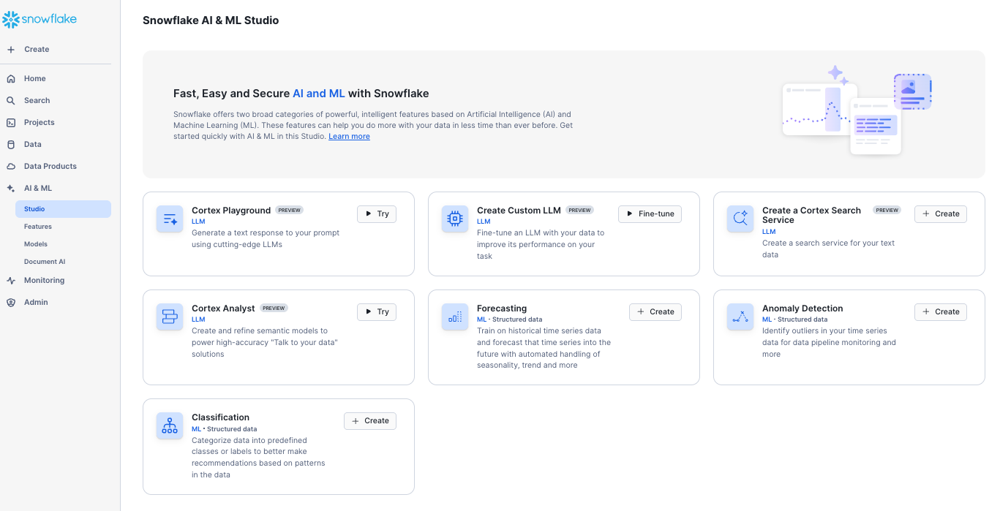

Welcome
Build an AI Assistant for FSI using Cortex and Document AI

Effective stock selection relies on having up-to-date data from diverse sources—research analyst reports, 10-K filings, investor call recordings, historical tick data, and real-time market feeds. To manage this efficiently, a unified platform is essential—one capable of storing and processing all data types, whether PDFs of analyst reports, MP3 investor recordings, or SEC documents. This data must be readily accessible for analysis using the latest large language models (LLMs) such as Anthropic, Gemma, LLaMA, or DeepSeek. Ensuring the trustworthiness and security of generated summaries and insights is critical, especially when they inform high-stakes financial decisions. In addition, developing Agentic AI capabilities allows for natural language question-answering tailored to investors and traders who need precise, real-time insights before executing trades. In this hands-on lab, you’ll learn how to build a Stock Selection Agent from the ground up using the Snowflake AI Data Cloud.
Learn how you can leverage the latest AI technologies right within the Snowflake platform. When AI is deeply embedded in your trusted data platform, the possibilities are endless. We will be exploring the processing of both Unstructured and Structured data which will then allow the application of a Cortex Agent to help discover insights by leveraging All Data.
This hands-on lab utilizes a comprehensive dataset spanning multiple data types and financial analysts to demonstrate real-world AI applications in financial services. You'll work with:
Analyst Research Reports
The lab features comprehensive analysis from specialized research firms created specifically for this hands-on experience: - Apex Analytics - Growth-focused equity research - Consensus Point - Institutional-grade analysis and recommendations - Momentum Metrics - Quantitative trading insights and momentum analysis - Pinnacle Growth Investors - Growth equity research and sector analysis - Quant-Vestor - Quantitative investment research and algorithmic trading insights - Sterling Partners - Value-oriented investment analysis - Veridian Capital - Comprehensive equity research and market analysis
Multi-Modal Data Integration
Throughout the lab, you'll process and analyze:
- Research Reports - Extract structured insights (ratings, price targets, growth forecasts) using Document AI
- Earnings Call Transcripts - Process audio recordings into searchable text with sentiment analysis
- Financial Infographics - Extract key metrics from quarterly earnings visuals and charts
- Real-time Market Data - Live stock price feeds and trading data from Snowflake Marketplace
- Historical Performance Data - Multi-quarter trends and comparative analysis
AI-Powered Analysis Journey
Your AI assistant will synthesize insights from all these sources to answer questions like: - "What do Apex Analytics and Consensus Point analysts say about Snowflake's growth prospects?" - "How does Momentum Metrics' quantitative analysis compare to Sterling Partners' value assessment?" - "What are Veridian Capital's latest price targets and how do they align with earnings call sentiment?" - "Based on all available data, should I buy, sell, or hold Snowflake shares?"
This diverse dataset enables you to experience how modern AI can unify structured financial data with unstructured analyst opinions, creating comprehensive investment intelligence.
A complete lab environment has been built for you automatically. This includes:
- Snowflake Account: sfsehol-dry_run_build_ai_assistant_oct_vuifug
- User: USER
- Snowflake Virtual Warehouse: DEFAULT_WH
- Snowflake Database: DATAOPS_EVENT_PROD
- Schema: DEFAULT_SCHEMA
{kind=link}
You will be taken through the AI capabilities of Snowflake with Financial Reporting data. You will be focusing on the Snowflake share price - and will be investigating whether you should BUY, SELL or HOLD
Please note that the Analyst reports for this lab are completely fictitious and financial decisions cannot be made based on any of the outcomes of this lab.
-
Unstructured Data Processing
-
Structured Data Processing
-
Snowflake Intelligence - Create an AI agent using simple configuration
-
Develop a Streamlit Agent with the Snowflake Agent API - an application to query both Unstructured and Structured Data
-
Navigate through the lab via the side-bar menu
- Navigate to the lab steps to begin the lab.
This lab environment will disappear!
This event is due to end at 2025-11-02 22:00:00+00:00, at which point access will be restricted, and accounts will be removed.
Lab Steps
Logging in and Cortex Playground
Within the previous screen, you should have logged into snowflake which would have opened up in a new tab and should look like this:
{kind=link}
If you cannot find the snowflake URL, you can go back to the registration page and view your unique Snowflake link by clicking here: Personalized Event Homepage
Upon logging in, you may be prompted to add your email address. It is important to input your email address for accessing market place data. You will be accessing marketplace data in this lab.
Once you have logged in, populated your email address and closed down any welcome messages, navigate to the AI & ML section of the navigation bar.
Snowflake AI and ML studio
Snowflake AI and ML studio is a one stop shop to try out a number of AI functions using a user friendly UI.
.
{kind=link}
For today's lab, you will be exploring the AI features within Snowflake. The following features we will be cover as part of the lab:
-
The Cortex LLM Playground lets you compare text completions across the multiple large language models available in Cortex AI.
-
The Snowflake Cortex Fine-tuning function offers a way to customize large language models for your specific task.
-
Cortex Search enables low-latency, high-quality “fuzzy” search over your Snowflake data. Cortex Search powers a broad array of search experiences for Snowflake users including Retrieval Augmented Generation (RAG) applications leveraging Large Language Models (LLMs).
-
Cortex Analyst is a fully-managed, LLM-powered Snowflake Cortex feature that helps you create applications capable of reliably answering business questions based on your structured data in Snowflake.
Cortex Playground
Today, we will be covering Cortex Complete using prompt engineering. This will be covered in various notebooks as part of data processing.
You can try out prompt ideas using the Cortex Playground.
Click on Cortex Playground and try asking some questions using a model of choice.
Take a look at the following example:

The answer to the question is making some suggestions of the things I might want to look at before I make this sort of financial decision. All this information is available in various datasets.
Document AI
Although Document AI is not an option within the studio page, you will see a link to it within the AI & ML category in the navigation bar. This is where you will extract features from a variety of unstructured documents and will be the next section of the lab. Please Proceed to Unstructured Data Processing from the navigation bar.
Unstructured Data Processing
Document AI
Build and Run 1 Document AI model
In this section you will learn how to build and train a Document AI Model which will enable you to extract important structured content out of unstructured documents.
-
Within the AI & ML area, click on Document AI:

-
Click on the + Build icon to build a new model

-
Under Build name, type in ANALYST_REPORTS
-
Choose the ACCELERATE_AI_IN_FSI for the database and DOCUMENT_AI for the Schema

Press Create
Downloading Documents
We now need to upload some documents into Document AI in order to build a trained model. The first Model we will build are analyst reports. The reports we will be using are completely fictional.
- Download The Analyst Reports here
Uploading the Documents to the model
- Unzip the Analyst reports to a file location which you can access
- Open the model which you have just created and press upload documents
{kind=link}
You will see that you can upload a variety of formats. Today we will be uploading PDF documents. You can either select the files by searching in your file system or drag and drop.

Press Upload
You will see that 6 documents are now uploaded but need attention. To use the model, you will first need to decide which fields you would like to extract. A warning will also let you know that for better accuracy you should really train the model with more documents. For this exercise we will just use 6 but in reality you will need to train the model with at least 10 documents for good accuracy.
Review Documents and Extract Fields
- With in the Documents in Dataset section, press See all documents
You will see that all 6 documents are in need of review
- Click on the first document in the list. This will take you straight to the Analyst Report. The right hand side of the screen you will need to add the fields that you wish to extract. We will be extracting specific fields.
To start with, you will be presented with how you would like Document AI to extract the information. Do you want to extract key singular facts (entities) or would you like to extract table information? You choose either table or entity mode at this point. For this exercise you will extract entities. But feel free to experiment and choose table extraction.
-
Press + Entity to add a new field
-
Enter DATE_REPORT in the first field and in the second field, as the question When was the Report Created?
Document AI will search through the multi page document and then will give you an answer with a probability score

-
If you are happy with the answer, mark it with the tick. When you press the tick, the probability score will change to 1.00 - In other words, you have told Document AI that you are 100% sure that this answer is correct.
-
Create 5 additional fields with the corresponding questions - If Document AI gets the answer right, mark with a tick. Press + Entity to create each field.
| Field | Question |
|---|---|
| NAME_OF_REPORT_PROVIDER | name of the report provider |
| RATING | What is the rating? is it BUY, SELL, HOLD OR EQUAL-WEIGHT? |
| CLOSE_PRICE | Close Price Value |
| PRICE_TARGET | Price Target Value |
| GROWTH | What is the latest revenue Growth - YoY |
If the answer is wrong, overtype the answer with the correct answer. This will automatically mark it as correct with the new answer.
Sometimes document AI comes up with no answer at all. If this is correct, still mark with a tick.
When you have finished entering the questions and getting the answers you should see something that looks like this:

Now it's time to evaluate the same questions and answers with another document.
- Click on the arrow to review on the bottom right of this pane the next document. Currently you are reviewing 1 of 6 documents.
The next document may populate more of the answers. You will need to simply mark them as to whether they are correct or not. If any are incorrect, type over with the correct answer.
- When you have finished reviewing 2 of 6 documents, continue to review the final 5 documents.
Once you have completed your document review press the back button on the top left to go back to the previous screen

All 6 documents should now be marked as Accepted.
- Go back to Build Details
You will see that there is a model accuracy. This accuracy figure will be due to how many answers document ai initially predicted correctly or not. If the accuracy score is low, you may wish to train the model by clicking on Train model button. This will retrain the model using the corrected answers.
- Press Publish Version which will publish your first version of the model. Today, we will not train model as this can take some time - especially if you are training large documents of multiple pages. In addition, the model is calculating a high model accuracy score of 0.95. Being concise with your questions can help the accuracy with little need for training.
Once complete, you will see a model version number and example queries on how to utilise the model in SQL

You will have examples of these queries preloaded into a notebook. This model is iterative, if you find the results are not what you expect in terms of accuracy, simply add more documents and retrain. The more documents you train, the better results you will get. Every time you re-train or republish a new version, you will get a new version number. You will need this version number in the query. The screenshot above, shows that you are using the model version 1.
- Press the back button to return to the Document AI home screen.
Extracting data into a table
If you choose the table mode you can extract data into a table format. This could look something simular to this infograhic example:
{kind=link}
The edit mode allows you to choose what columns to add in the table and multiple tables can be extracted
{kind=link}
- If you wish to tryout the table mode, Download the Infographics here
Process Documents at Scale
Let's now process some documents. We have more documents both for Analyst Reports and infographics in a stage. We can use our new models to extract structured information out of them. In addition, we will extract all the text out of the Analyst reports for search purposes.
For the next Document AI steps, you will use Snowflake Notebooks to process the documents as well as visualise the outputs.
Model 1 - Analyst Reports
- Go back to the home page and click on Projects > Notebooks
- Click on the Document AI Analyst Reports notebook
{kind=link}
- Run through the notebook to process the Analyst Reports.
This notebook will perform the following:
-
Extract the values defined in the ANALYST_REPORTS model you have created from a directory of files residing in a Snowflake Stage
-
Create a structured table of information
-
Extract all remaining text using Cortex Parse Document
Infographics data
You will run a second notebook which will extract the structured text out of the Infographic image files stored in a Snowflake Stage.
- Go back to the Notebooks and open the INFOGRAPHICS notebook

- Run through the notebook to process the Infographics which will extract all values and store the results in a new structured table.
Analyst Investor Calls
Snowflake Inc., like all publicly listed companies, conducts public announcements of its quarterly financial results. In this project, we will process the Q3 earnings call recording featuring Snowflake’s CEO and CFO. The workflow involves converting the MP3 audio file into text using transcription technology. Once transcribed, the text will be summarized to extract key insights. Finally, this summary will be stored in a dedicated Summary table for further analysis. We will add this unstructured data summary into our Cortex Agent at the end of the lab. This will show you the power of converted calls into text and then into Summary using cortex and then front ending them using Streamlit so you have an Agentic AI.
{kind=link}
Let's Begin analysing sound transcript data - Go back to the home page and click on Projects > Notebooks
- Click on the ANALYSE_SOUND notebook
- Run through the notebook to analyse the sound transcripts which also includes sentiment analysis and an introduction to how Vector Embeddings enhances search capabilities.
Create a Search Service
Introduction
In this section, you will create a powerful search service that makes your unstructured financial data instantly accessible and queryable. This is a critical step in building intelligent AI applications that can quickly find and retrieve relevant information from large document collections.
What You'll Accomplish
By the end of this section, you will have:
- Built a Hybrid Search Engine: Created a search service that combines both vector (semantic) and keyword search capabilities
- Enabled Instant Document Retrieval: Made your analyst reports, earnings call transcripts, and infographics searchable in seconds
- Implemented RAG Foundations: Established the core infrastructure for Retrieval Augmented Generation (RAG) that powers intelligent AI responses
- Prepared for Agent Integration: Created the search capabilities that your final AI agent will use to find relevant context
The Challenge: Finding Information in Unstructured Data
You've successfully processed and extracted valuable insights from multiple types of financial documents: - Analyst Reports: Structured data extraction plus full text content - Earnings Call Transcripts: Audio-to-text conversion with sentiment analysis - Financial Infographics: Key metrics extraction from visual content
But now you face a common challenge: How do you quickly find specific information within this growing collection of unstructured data?
The Solution: Intelligent Search Services
Traditional keyword search falls short when dealing with financial content because: - Important concepts may be expressed in different ways ("revenue growth" vs "top-line expansion") - Users need to find documents by meaning, not just exact word matches - Context and semantic understanding are crucial for financial analysis
Cortex Search solves this by providing: - Semantic Search: Understands meaning and context, not just keywords - Hybrid Approach: Combines the precision of keyword search with the intelligence of vector search - Zero Infrastructure: No need to manage embeddings, indexes, or search infrastructure - Real-time Updates: Automatically refreshes as your data changes
Building Blocks for AI Intelligence
The search service you create here will become a fundamental component of your final AI agent, enabling it to: - Find Relevant Context: Quickly locate information needed to answer user questions - Provide Citations: Reference specific documents and passages that support its responses - Cross-reference Information: Connect insights from multiple documents and data sources - Support Complex Queries: Handle sophisticated financial analysis requests
Let's begin building your intelligent search capability.
Understanding Your Data Assets
We now have quite a bit of unstructured data from the analyst reports, the earnings calls, and the infographics - now how do we find it all efficiently?
This is where you will build a search service.
You have experienced the key principle of RAG based searching while you were searching for relevant pieces of information in the earnings call transcripts section.
A search service uses this principle but simplifies the setup.
Cortex Search gets you up and running with a hybrid (vector and keyword) search engine on your text data in minutes, without having to worry about embedding, infrastructure maintenance, search quality parameter tuning, or ongoing index refreshes. This means you can spend less time on infrastructure and search quality tuning, and more time developing high-quality chat and search experiences using your data.
Implementing Your Search Service
Now let's put this into practice by creating your search service using the data you've processed in previous sections.
- Go back to the home page and click on Projects > Notebooks
- Open the CREATE_SEARCH_SERVICE notebook
Next Steps: Connecting to Structured Data
Excellent! You have now created a powerful search service for your unstructured financial documents. Your search service can now: - Find relevant analyst reports based on semantic meaning - Retrieve earnings call segments related to specific topics - Search through infographic content and extracted insights
However, comprehensive financial analysis requires both unstructured insights and structured data analysis. While you've used Cortex Search to find information within unstructured documents, there are also many structured datasets that you'll want to include in your analysis. Some structured tables you have already created using Document AI, but there will be additional structured datasets from external sources.
-
Proceed to Structured Data Processing where you will start by transforming stock prices and trading datasets from the marketplace.
Click Here to continue
Structured Data Processing
Get Data from the MarketPlace
First, it would be good to get some data from the marketplace to understand the latest stock prices of Snowflake shares.
- In the Home page, go to Data Products and then Marketplace.
- In the Search Menu, type in share prices snowflake.
- Click on the Finance & Economics dataset.

This dataset is structured in nature but updates on a daily basis.
-
Press Get to get the data. You will be prompted to type in your email address if you have not already completed your profile.
-
Press Done
We now have some structured data available to use for analysis
- Navigate to Analyse your Data with Cortex Analyst
Analyse your data with Cortex Analyst
In this section you will learn how to build a dynamic data explorer using Cortex Analyst. Traditionally, users would digest structured information through reports. Over time, reports turned into dashboards and self service capabilities became more and more in demand. However, in order to self serve, users would normally require extensive report building and data engineering expertise.
Cortex Analyst's AI allows views to be generated by simply asking questions about the data
Examine the Structured Marketplace Data
First of all, navigate to the Cortex Analyst notebook by navigating to the projects > Notebooks.
- Open the notebook and press Start in the top right hand corner to start the compute.
Within the self contained notebook, you will perform the following:
- Create a new dataset from the market place
- Visualise the data in Streamlit
Once you have completed the notebook, return here
Use Cortex Analyst to Explore the data
It is easy to create an app in order to gain insights from structured data. Cortex Analyst allows the user to ask questions in natural language and will return the result in an appropiate format. Let's Begin:
- From the navigation bar on the right, hover over the AI & ML icon and click on Studio

-
When prompted, end the notebook session to proceed.
-
Press Try on Cortex Analyst.
{kind=link}
-
Within the tabs at the top of the screen, switch to Semantic models
-
Under database, select ACCELERATE_AI_IN_FSI then CORTEX_ANALYST for schema
-
select CORTEX_ANALYST for the stage.
-
you will see a model called semantic_model.yaml has already been created. Here you can open the model to view how it's constructed. This model will be used for the agent later on.
-
Click on the semantic_model.yaml to open the model.
{kind=link}
You will note that as per the screenshot above, the model navigation menu is open. The Semantic model includes 5 logical tables. These tables have all been created earlier in the lab.
The right hand screen allows you to test questions.
- try out some questions in here.
The Semantic model is stored as a yaml file within a stage. You can save the contents of this model as a semantic view.
- exit back to the cortex analyst home screen and click on the 3 dots next to the yaml file to Convert to Semantic View
{kind=link}
- Convert using the following database and schema
{kind=link}
- Press Convert and save
Optional Exercise
So far, you have browsed an existing Semantic model which is stored as a YAML file. In here, you would be able to edit as you see fit. In addition, you have imported the semantic model as a semantic view which stores the model within the database.
It is also easy to create a brand new model from scratch. If you have time, please have a go at creating a new model.
-
Press Create New to create a new Semantic model about the previously loaded dataset.
-
Call the model stock_data.
Below you will see the Semantic Model wizard. This will create a YAML file which makes sense of the data ane provides a link between the sorts of questions that might be asked and the dataset itself.
- Populate the fields as the screenshot below:
{kind=link}
-
Press Next
-
Under the ACCELERATE_AI_IN_FSI.DEFAULT_SCHEMA view, select the STOCK_PRICES table.
- Press Next: Select tables
-
Select all fields
-
Press Done
{kind=link}
Next, you will need to specify what fields are Dimensions, Time Dimensions, Facts, Named Fields or Metrics. Cortex suggests where they should be placed - at this point, you have the ability to override where needed.
Under Named filters you can educate Cortex Analyst valid examples of how the data is filtered which improves the accuracy of the answers. We will add one now
- Under Named Filters click on the +
- Under Expression, type in the following:
The next step you can provide sample questions of what might be asked about the dataset. Tryout the following in the text box:
What is the latest stock price for SNOW share?
Tell me the stock prices for SNOW Shares last week by day of the week?
What is the stock prices for SNOW shares by month?
As you try this out, you will see example outputs

Add More Datasets in the model
We have now created a Semantic Model for the structured dataset found on the marketplace. If you remember, we parsed two additional datasets from Document AI and created two additional structured tables. We will add these additional tables into the semantic model.
- Within the Snowflake AI and ML Studio, click on Cortex Analyst
- Choose ACCELERATE_AI_IN_FSI.CORTEX_ANALYST for the Database and Schema
- Choose Cortex Analyst for the STAGE.
-
Select the previously built yaml file.
-
Press Open
Now we are in the edit screen. You will see the existing setup - but now, we will add an additional table.
-
Click on the + next to Logical tables.
-
Under ACCELERATE_AI_IN_FSI.DOCUMENT_AI, select EARNINGS_INFOGRAPHIC_PARSED.
{kind=link}
-
Press Next
-
Select all fields.
-
Press Done
You can now browse through the Dimensions, Time Dimensions and Facts to see if everything is as expected. You have the opportunity to make amendments and add Synonyms to each field
You can now test Cortex Analyst out from here. For instance:
-
In the prompt ask What is the product Revenue in 2023
Cortex will Present you with an answer as well as a sample query. If you think this is correct, you can add it as a verified Query.
{kind=link}
When you have finished editing the Semantic Model press Save which is at the top right hand corner of the screen.
-
Add another Logical Table the same way as before. This time, within ACCELERATE_AI_IN_FSI.DOCUMENT_AI, select REPORTS_STRUCTURED.
-
Choose All columns and then click Done
-
What analyst gave a rating of Buy?
-
Who gave a rating of Sell?

-
When you have finished refining the Semantic Model press Save which is on the top right hand corner of the screen.

You will have remembered that we also produced structured data from sound files. Wouldn't it be good if you could also ask Cortex Analyst when sections of the call are negative or positive??
-
Add an additional LOGICAL TABLE to the existing semantic model
-
Use the TRANSCRIPTS_BY_MINUTE table which is inside the DEFAULT_SCHEMA
-
Take a look at the facts, Dimensions, synonyms etc of each field - to help Cortex understand the context
-
Try out cortex analyst with the prompt. See if you can get a good answer for "what transcript is the most negative?"
-
Explore other questions users might ask, and refine the model accordingly.
-
Save any changes to the model. The more descriptive your model, the better the results.
Remember to Save your work as we will be using this semantic model in the next step.
So now we have a way to find out information about Structured Data, and we created a search service for Unstructured Data.
Let's create an Application to combine the two types of searches together.
- Please proceed to the Application section where you will learn about Creating an Agent using Snowflake Intelligence
Application
Configure and use Snowflake Intelligence
{kind=link}
Introduction
In this section, you will bring together all the AI capabilities you've built throughout this lab to create a unified, intelligent financial assistant using Snowflake Intelligence. This represents the culmination of your hands-on learning experience, where you'll orchestrate multiple AI tools into a single conversational agent.
What You'll Accomplish
By the end of this section, you will have:
- Created a Financial AI Agent: Built a conversational agent that acts as a knowledgeable financial analyst named "StockOne"
- Integrated Multiple Data Sources: Connected your agent to both structured data (via Cortex Analyst) and unstructured data (via Cortex Search)
- Unified Analysis Capabilities: Enabled seamless querying across stock prices, analyst reports, earnings calls, and financial infographics
- Demonstrated Real-world Applications: Shown how AI can synthesize complex financial information to support investment decisions
Building on Your Previous Work
This section leverages everything you've created so far:
- Document AI Models: Your trained models for analyst reports and infographics will provide structured insights
- Cortex Search Services: Your search services will enable rapid retrieval of relevant information from earnings calls and reports
- Cortex Analyst Semantic Models: Your semantic models will allow natural language querying of financial data
- Marketplace Data: Your connected stock price data will provide real-time market information
What is Snowflake Intelligence?
Snowflake Intelligence is a comprehensive AI platform that allows you to create sophisticated agents by combining multiple AI tools and data sources. Unlike simple chatbots, these agents can:
- Reason Across Data Types: Combine insights from structured databases and unstructured documents
- Use Specialized Tools: Leverage different AI capabilities (search, analysis, visualization) as needed
- Provide Contextual Responses: Give detailed, evidence-backed answers with citations and visualizations
- Learn from Multiple Sources: Draw insights from your complete data ecosystem
Let's begin by creating your financial intelligence agent that will demonstrate the power of unified AI-driven analysis.
Creating Your Financial Agent
You can easily create your own agent using Snowflake Intelligence
- Within AI & ML click on Agents
-
Press Create Agent
-
Fill in the text boxes provided.
{kind=link}
- Press Create agent
{kind=link}
- Click on the agent and then press Edit
- Populate the about description - similar to the example below:
{kind=link}
-
Under Instructions, fill in the response instructions as follows:
Response Instruction
You are a financial analyst called StockOne. You are using the latest information about Snowflake to give the user expert advice.
Sample Questions
give me a table of ratings for each analyst?
what happened in the last earnings call?
Is Snowflake expected to grow in the future?
what are the latest SNOW stock prices over time in the last 12 months?
how many marketplace listings are in the latest report?
What did Shridhar say about revenue in the last earnings call?
shall I buy Snowflake shares?
Give me a chart which analyses sentiment on the earnings calls
Adding Tools to the Agent
Snowflake Intelligence allows for multiple tools to be added to allow the agent to answer the question. The standard snowflake tools you can add are search services and Cortex Analyst.
In addition, you can add custom tools - such as a tool to generate an email or using other external services.
- Under Tools click +add next to Cortex Analyst to add the defined semantic model
You can select the model either as a view or via the Semantic Model File.
{kind=link}
Choose DEFAULT_WH for the warehouse. This is the warehouse used to process the queries.
Under query Timeout, add the max number of seconds that the agent is allowed to think before timing out. In this example, enter 20.
-
Finally enter a description for the tool. Tip Generate with Cortex to automatically provide a meaningful description. Allow time for the description to be generated.
-
Press Add to add the tool.
{kind=link}
Next you will create tools for the unstructured data. These will be linked to Search Services
-
Under Cortex Search Services, select +Add to create to assign a new search service
-
Complete the configuration as per the screenshot below.
{kind=link}
You will be assigning the URL in order to drill down to documents when appropriate.
-
Press Add
-
Create a Second Search Service Tool - this time, for the Infographics
{kind=link}
You can also prompt the agent further by how to break down the tasks
Press Save to save the agent.
Now you have finished the agent setup, you can now go to Snowflake Intelligence and ask questions.
-
From AI & ML, navigate to Snowflake intelligence
-
Ask a question
Example question
*Give me a table of ratings for each analyst?
what happened in the last earnings call?
What did Morgan Stanley say about Growth?
what are the latest SNOW stock prices over time in the last 12 months?
how many marketplace listings are in the latest report?
Tell me about dynamic tables?
What did Shridhar say about revenue in the last earnings call?
shall I buy Snowflake shares?*
{kind=link}
You will note that this question will look at a variety of data sources which provides the answer.
Conclusion
Congratulations! You have successfully built a comprehensive AI-powered financial analysis assistant using Snowflake Intelligence. Throughout this hands-on lab, you have accomplished several key objectives:
Data Integration and Processing
You have successfully integrated and processed multiple types of financial data:
- Real-time Stock Data: Connected to marketplace data to access current and historical Snowflake (SNOW) stock prices
- Analyst Reports: Used Document AI to extract structured insights from fictional analyst reports, including ratings (BUY/SELL/HOLD), price targets, and growth projections
- Financial Infographics: Processed quarterly earnings infographics to extract key metrics like revenue, customer counts, and marketplace listings
- Earnings Call Transcripts: Analyzed audio recordings from quarterly earnings calls, including sentiment analysis and key executive statements
AI Technologies Mastered
You have hands-on experience with cutting-edge AI capabilities:
- Document AI: Built and trained custom models to extract structured data from unstructured financial documents
- Cortex Search: Created search services for rapid retrieval of relevant information from large document collections
- Cortex Analyst: Developed semantic models to enable natural language querying of structured financial data
- Snowflake Intelligence: Orchestrated multiple AI tools into a unified conversational agent
Unified Financial Decision Support
Your agent can now provide comprehensive investment insights by:
- Combining Multiple Perspectives: Integrating quantitative stock data with qualitative analyst opinions and executive commentary
- Time-based Analysis: Analyzing trends over time from historical stock prices, quarterly reports, and evolving analyst ratings
- Sentiment Understanding: Assessing market sentiment through earnings call analysis and analyst report tone
- Real-time Intelligence: Providing up-to-date information synthesis to support investment decisions
Real-world Applications
The AI assistant you've built demonstrates practical applications for:
- Investment Research: Quickly synthesizing information from multiple sources to evaluate investment opportunities
- Risk Assessment: Understanding both quantitative metrics and qualitative factors that could impact stock performance
- Market Analysis: Combining structured financial data with unstructured market commentary for comprehensive analysis
- Decision Support: Providing evidence-based recommendations backed by multiple data sources
Key Takeaway
You have experienced firsthand how Snowflake's AI Data Cloud can transform raw, disparate financial information into actionable intelligence. By combining structured data (stock prices, financial metrics) with unstructured data (analyst reports, earnings calls), your AI agent can now answer complex questions like "Should I buy Snowflake shares?" with comprehensive, data-driven insights.
This approach represents the future of financial analysis - where AI enables rapid synthesis of vast amounts of information to support better investment decisions. The techniques you've learned can be applied to any stock, sector, or financial decision-making scenario.
Remember: While this lab demonstrates powerful AI capabilities for financial analysis, all analyst reports used were fictitious, and no actual investment decisions should be made based on this lab's outputs.
Create Cortex Agents using the Agents API
{kind=link}
You have now experienced out of the box agents using simple configuration using Snowflake Intelligence. Snowflake also supports the creation of custom built agents using the Agents API. Let's see how a Cortex Agent using Streamlit will allow users to ask questions about their data all in one place.
If you have completed all the previous steps then this step should just work.
- Within Projects>Streamlits click on the streamlit 2_CORTEX_AGENT_SOPHISTICATED
It leverages Streamlit extras which has packaged in styles to customize your app. It also allows you to choose the search service and analyst semantic model during the app configuration. The agent has configurable options for the user such as multiple chart types using Plotly
-
Ask questions about the data that might appear in the earnings calls or analyst reports.
-
Ask questions about the data that might appear in the stock data or the latest infographics.
Sample Questions
These questions should give answers from both unstructured and structured examples using all the datasets we covered in this lab.
give me a table of ratings for each analyst?
what happened in the last earnings call?
What did Morgan Stanley say about Growth?
what are the latest SNOW stock prices over time in the last 12 months?
how many marketplace listings are in the latest report?
Tell me about dynamic tables?
What did Shridhar say about revenue in the last earnings call?
shall I buy Snowflake shares?
If you completed the optional exercise in Cortex Analyst, this is the response you will get if you ask what transcript had the lowest sentiment:
{kind=link}
Try asking the following question to get more information
Can you give me more information about that particular earnings call
So you should see how convenient it is to bring in both the processing of unstructured datasets and structured datasets to get one holistic view of the data subject (in this case the analysis of Snowflake) in question.
Editing the Application
Your role in this setup allows you to edit the application. This particular agent is quite sophisticated in terms of functionality. So you can understand the key principles of how the agent works, let's switch over to a simpler agent.
Within Projects > Streamlit navigate to CORTEX_AGENT_SIMPLE
- Press Edit to go into edit mode.
You will notice that the semantic model has been specified as well as the search service - which is what you created earlier.
You will notice a series of functions such as:
-
run_snowflake_query
This calls the built-in Agent API - and will treat the question differently depending on the context. For instance, if the answer relates to structured data, it will use the tool spec analyst1 which will attempt to turn the question into a SQL query and will use the YAML file which you created in Cortex Analyst. If however, the answer can only be found from unstructured data, it will use the tools spec cortex_search which will then use the search service to retrieve the information. It will also retrieve up to 10 citations - these will be the chunked text which were extracted earlier on in the lab.
-
process_sse_response
This is about parsing the results in something readable as the original response will be a JSON payload
-
execute_cortex_complete_sql
This uses the LLM to attempt to create a chart based on what is in the dataset. The type of LLM is defined using the model variable.
-
extract_python_code
This is used to return the Python result (which will be a Streamlit chart) into executable code.
-
replace_chart_function
This uses the same variables created for the suggested chart but allows for alternative Streamlit charts.
-
def main
This is the initial (parent) function which is executed first and calls the other functions when appropriate.
If you would like to make any changes to this application, you will need to duplicate it. This is because the Streamlit app is managed by an external application.
If you duplicate the application using the duplicate button, all files associated to the application will be copied with it.
Conclusion
The Cortex Agent provides a unified way to query both structured and unstructured datasets, enabling users to gain insights from diverse data sources within a single application. By leveraging Streamlit’s customization capabilities and integrating Snowflake’s semantic model and search service, users can seamlessly retrieve information from earnings calls, analyst reports, stock data, and more. The built-in functions ensure efficient querying, data parsing, and visualization, making it easier to analyze financial and market trends.